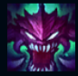
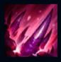
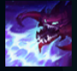
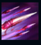
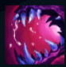

Cho'Gath
| Cho'Gath The Terror Of The Void | |
|---|---|
| Release date | 26.06.2009 |
| Class | Specialist |
| Positions | Top |
| Resource | Mana |
| Range type | Melee |
| Adaptive type | Magic |
| Base statistics | |||
| Health | 574 – 1934 | Mana | 270 – 1290 |
| Health regen. | 9 – 23.45 |
Mana regen. | 7.2 – 14.85 |
| Armor | 38 – 97.5 | Attack damage | 69 – 140.4 |
| Magic resist. | 32 – 53.25 | Crit. damage | 175% |
| Move. speed | 345 | Attack range | 125 |
Din clipa în care Cho'Gath a ajuns pentru prima oară sub lumina aspră a soarelui Runeterrei, a fost mânat doar de o foame pură, ce nu poate fi potolită niciodată. Biologia lui complexă este o manifestare perfectă a dorinței Vidului de a înghiți întreaga viață din univers. Orice înghite îl face să crească rapid, augmentându-i masa musculară și întărindu-i carapacea exterioară care se aseamănă unui diamant organic. Atunci când creșterea nu corespunde nevoilor sale, Cho'Gath vomită materialul în exces sub forma unor spini ascuțiți ca niște lame, străpungându-și prada și pregătind-o pentru ospățul de mai târziu. |  |
CARNIVOR Când Cho'Gath ucide o unitate, recuperează viață și mană. Valoarea recuperată crește odată cu nivelul lui Cho'Gath. |
||
|---|---|---|---|---|
 |
FISURĂ Fisurează pământul în locația-țintă și aruncă unitățile inamice în sus, provocându-le daune și încetinindu-le. |
|||
 |
ȚIPĂT SĂLBATIC Cho'Gath scoate un țipăt înfiorător care lovește toți campionii dintr-o zonă în formă de con, provocându-le daune magice și amuțindu-i timp de câteva secunde. |
|||
|  |
ȚEPUȘE VORPALE Atacurile lui Cho'Gath lansează țepușe letale care le provoacă daune tuturor unităților inamice aflate în fața sa și le încetinește. |
|||
 |
OSPĂȚ Devorează o unitate inamică, provocându-i o cantitate mare de daune reale. Dacă ținta este ucisă, Cho'Gath crește în dimensiune și primește un bonus la viața maximă. |